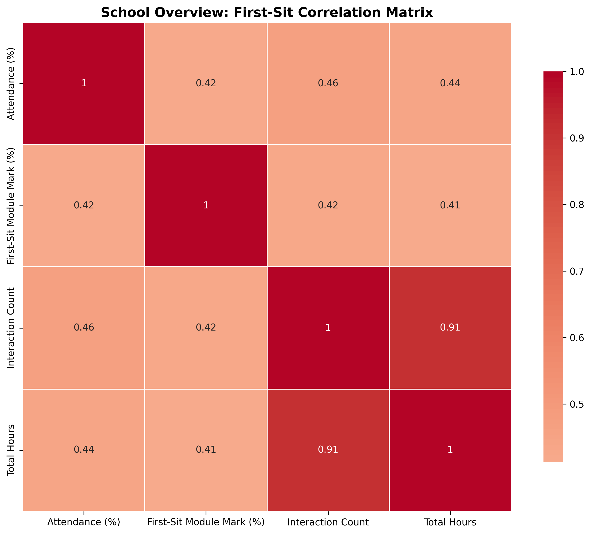
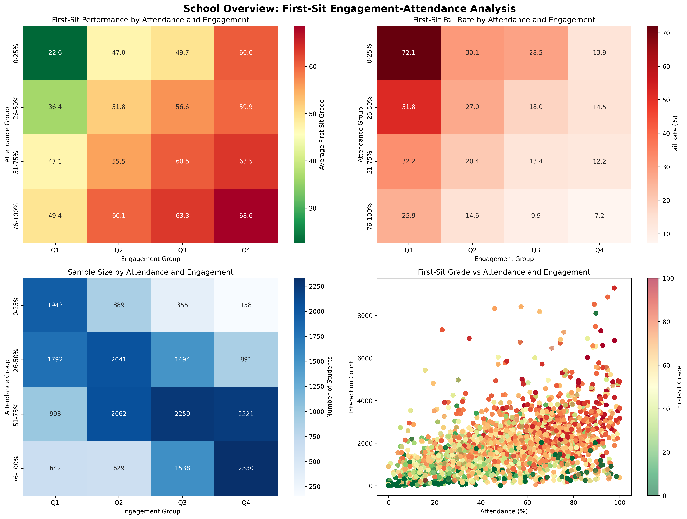

Student Risk Factor Analytics System
A comprehensive data analytics system that examines relationships between student attendance, online engagement, and academic performance across all levels (3-7). Using advanced statistical analysis and machine learning, the system identifies at-risk students and provides evidence-based insights for targeted interventions, enabling proactive support strategies that improve student outcomes.
Impact & Scale
Schools Analysed
Academic Levels (3-7)
Fail Rate Identified
Attendance Correlation
Project Scope: Developed for the School of Computer Science and Engineering and Westminster Law School in collaboration with Luke Mason, Head of Westminster Law School. Analysis period: September 2024 - May 2025. This system provides actionable insights that inform university-wide student support strategies and early intervention programmes.
The Challenge
Universities collect vast amounts of data about student attendance, online engagement, and academic performance, but this data often exists in siloed systems making it difficult to identify patterns and at-risk students. Traditional approaches to student support are reactive rather than proactive, with interventions often coming too late to make a difference.
Key Challenges Addressed
- Data Fragmentation: Student data scattered across three systems (SEAT for attendance, Blackboard for engagement, Clickview for performance)
- Reactive Support: Lack of early warning systems to identify struggling students before they fail
- EDI Gaps: No systematic analysis of how different demographic groups perform and engage
- Manual Analysis: Time-consuming manual processes to analyse patterns across hundreds of students and multiple levels
- Limited Insights: No correlation analysis between attendance, engagement, and performance to inform evidence-based interventions
The Solution
I developed an end-to-end data analytics system using Python that automatically integrates data from multiple university systems, performs comprehensive statistical analysis, applies machine learning for risk prediction, and generates interactive HTML reports with actionable insights.
Core Components
Data Integration Pipeline
Automated extraction and merging of data from SEAT (attendance CSV), Blackboard (engagement Excel), and Clickview (performance Excel) with intelligent student ID matching and data quality validation.
Statistical Analysis Engine
Correlation analysis using Pearson coefficients, multi-dimensional heatmaps, survival analysis curves, and sample size validation to ensure statistical significance.
Machine Learning Predictor
Random Forest, Gradient Boosting, and Logistic Regression models to predict student success across levels with feature importance analysis and confidence scoring.
EDI Analysis Framework
Comprehensive analysis of performance across gender, ethnicity, disability, deprivation indices, and other demographic factors to identify equity gaps.
Technology Stack
Key Findings
- Strong Attendance Correlation: r = 0.442 correlation between attendance and performance, providing statistical evidence for attendance policies
- Engagement Impact: r = 0.384 correlation between online engagement and performance, validating LMS investment
- 28.4% Fail Rate: Overall module failure rate identified, with level-specific breakdowns
- Data Coverage: 70% of students have attendance data, 58% have engagement data
- EDI Insights: Identified demographic groups with higher failure rates requiring targeted support
Sample Visualisations

EDI Analysis: Performance and failure rates across demographic groups including gender, ethnicity, and deprivation indices

Correlation Matrix: Statistical relationships between attendance, engagement, performance, and demographic factors

Engagement-Attendance Heatmap: Multi-dimensional analysis showing average marks based on combined attendance and engagement levels
Technical Highlights
Intelligent Data Pipeline
The system handles complex data integration challenges including 7-digit student ID matching for engagement data, level-specific engagement file loading, transparent missing data reporting, and YAML-based configuration for module-specific rules. All data processing includes validation checks and quality reporting.
Advanced Statistical Methods
Beyond simple averages, the system implements Pearson correlation analysis with significance testing, survival analysis curves for cumulative achievement, multi-dimensional heatmaps for interaction effects, sample size analysis to ensure statistical validity, and confidence intervals for predictions.
Machine Learning Pipeline
The student success predictor trains multiple models (Random Forest, Gradient Boosting, Logistic Regression), performs cross-validation for accuracy, ranks feature importance to identify key predictors, generates risk scores for individual students, and provides personalised intervention recommendations.
Interactive HTML Reporting
Reports feature tabbed navigation (Overview + Level 3-7), embedded visualisations with explanatory text, executive summaries for senior leadership, technical documentation for analysts, and user guides tailored for Heads of School.
Real-World Impact
Evidence-Based Decision Making: School leadership now has quantitative evidence to inform attendance policies, engagement strategies, and resource allocation. The system identified specific demographic groups requiring additional support, leading to targeted intervention programmes.
Practical Applications
- Early Warning System: Machine learning models predict at-risk students at the start of term, enabling proactive intervention
- Policy Development: Statistical evidence (r = 0.442) supports attendance requirements and engagement initiatives
- Equity Monitoring: EDI analysis ensures support reaches underperforming demographic groups
- Resource Allocation: Identifies which levels and programmes need additional academic support
- Quality Enhancement: Provides evidence for Teaching Excellence Framework (TEF) submissions
Deployment & Scalability
The system is designed for easy adaptation to other schools within the university. Each school simply needs to provide their Excel/CSV data files and update the YAML configuration. The modular Python architecture separates data loading, analysis, visualisation, and reporting, making it straightforward to extend with new analysis types or data sources.
Documentation
- Technical Documentation: Complete data pipeline specification, statistical methodology, and code architecture
- Heads of School Guide: Non-technical explanation of findings and how to interpret graphs
- README Files: Setup instructions and school-specific customisation guidance
Future Enhancements
Planned developments include real-time dashboard integration with university systems, automated weekly risk reports for tutors, natural language processing of student feedback data, longitudinal tracking across academic years, and integration with student support case management systems.
Philosophy: This project exemplifies my approach of combining Learning & Teaching expertise with data science and strategic thinking to create real-world impact. By turning raw data into actionable insights, we can move from reactive to proactive student support, ultimately improving outcomes for all students.